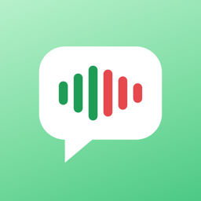

Tải Talk Wallet
Quản lý chi tiêu bằng giọng nói. Có trên App Store cho iPhone.
Get Talk Wallet
Track your spending by voice. Available on the App Store for iPhone.

Tên: Talk Wallet
Phụ đề: Ghi chi tiêu bằng giọng nói
Quản lý chi tiêu bằng giọng nói: nói Ăn trưa 50k là xong. Hiểu cả tiếng lóng 5 củ, năm chục và tự học từ mỗi lần bạn sửa — càng dùng càng hiểu bạn.
Talk Wallet giúp bạn ghi thu chi chỉ bằng một câu nói. Không cần gõ số, không cần chọn danh mục — cứ nói như bình thường, app tự hiểu.
Không tiện nói? Gõ câu cũng được.
Nói 500 cá mà app chưa hiểu? Sửa một lần thành 500.000 ₫ và danh mục Sinh hoạt — lần sau nói 300 cá app tự hiểu là 300.000 ₫. Bạn xem, sửa hoặc xoá mọi điều app đã học bất cứ lúc nào.
Khi câu nói chưa rõ — như Chuyển ABC 200k là thu hay chi — Talk Wallet hỏi lại thay vì đoán. Giao dịch chưa chắc chắn được đưa vào mục Cần xem lại để bạn kiểm tra sau.
Giao dịch và những gì app học được chỉ lưu trên iPhone của bạn — không tài khoản, không máy chủ. Xuất sổ thu chi ra file Excel theo tháng hoặc xoá toàn bộ chỉ với một chạm.
Hỗ trợ VND, USD, EUR. Giao diện tiếng Việt và tiếng Anh.
Name: Talk Wallet
Subtitle: Track spending by voice
Track spending by voice: say Lunch 50k and you’re done. Understands Vietnamese money slang like 5 củ or năm chục and learns from every fix you make.
Talk Wallet lets you log income and expenses with a single sentence. No typing numbers, no picking categories — just talk the way you normally do and the app figures it out.
Can’t talk right now? Type the sentence instead.
Said 500 cá and the app didn’t get it? Correct it once to 500,000 ₫ in Household — next time you say 300 cá, the app knows it means 300,000 ₫. You can view, edit or delete everything the app has learned at any time.
When a sentence is unclear — like Chuyển ABC 200k, income or expense? — Talk Wallet asks instead of guessing. Uncertain transactions go into Needs review so you can check them later.
Your transactions and everything the app learns stay only on your iPhone — no account, no server. Export a monthly Excel ledger or erase everything with one tap.
Supports VND, USD and EUR. Available in Vietnamese and English.
Cần giúp đỡ, báo lỗi hoặc góp ý? Mình đọc mọi email và thường trả lời trong 1–2 ngày làm việc.
Email: vudinhhuyit@gmail.com
Khi báo lỗi, bạn ghi giúp câu đã nói, kết quả app hiểu và phiên bản iOS.
Nhấn nút micro ở giữa thanh dưới, hoặc nói với Siri Ví nói — mic bật ngay, bạn chỉ cần nói. Im lặng 3 giây là app tự dừng, tắt mic và phân tích. Nếu câu đã rõ số tiền, thu hay chi và danh mục, app tự lưu và hiện thẻ “Đã lưu” (có nút Hoàn tác và Sửa); nếu chưa chắc, app hiện bản xem trước hoặc hỏi lại. Không tiện nói? Gõ câu vào ô “Hoặc gõ câu…”.
50k, 50 nghìn, 50 ngàn, năm chục (= 50.000)1 triệu 2 (= 1.200.000), 2 triệu rưỡi (= 2.500.000)củ, chai = triệu · lít, xị = 100.00012 dollars, $12, 500 euros — giữ nguyên, không tự quy đổiThời gian: hôm qua, hôm kia, tối qua, thứ hai tuần trước, ngày 5… Nếu câu không nhắc thời gian, app lấy đúng lúc bạn bắt đầu nói.
Khi app chưa hiểu một từ (ví dụ Mua nhu yếu phẩm 500 cá), giao dịch vẫn được lưu và đưa vào mục Cần xem lại. Bạn mở ra sửa một lần — số tiền thành 500.000, danh mục thành Sinh hoạt. Trước khi lưu, thẻ “Talk Wallet sẽ ghi nhớ” cho biết app sẽ học gì; bạn có thể tắt “Áp dụng cho lần sau” nếu không muốn.
Lần sau nói nhu yếu phẩm 300 cá, app tự hiểu là Chi 300.000 ₫, Sinh hoạt.
Là các giao dịch app chưa chắc chắn: đơn vị tiền lạ, chưa rõ danh mục, hoặc chưa rõ thu hay chi (ví dụ Chuyển ABC 200k). App không đoán bừa — bạn chọn “Là khoản thu/chi” hoặc nhấn Sửa để xác nhận. Có thể tắt việc hỏi lại trong Cài đặt › Hỏi lại khi không chắc.
Với câu có “chuyển”, bạn chỉ cần chọn một lần: chọn “Tôi chuyển cho ABC” thì lần sau nói Chuyển ABC 300k, app tự ghi là khoản chi, không hỏi lại. Nói ABC chuyển cho tôi 200k thì app hiểu ngay là khoản thu.
Chạm vào giao dịch để sửa. Nhấn giữ để xoá, hoặc dùng nút Xoá giao dịch trong màn sửa — ngay sau khi xoá có nút Hoàn tác trong vài giây.
Dữ liệu nằm trên iPhone và đi theo bản sao lưu iCloud/Finder của máy. Bạn cũng có thể xuất sổ thu chi của từng tháng ra file Excel: vào Cài đặt › Xuất dữ liệu (Excel), chọn tháng rồi bấm Xuất file Excel, hoặc ở màn Tổng quan chọn Tháng và bấm Xuất Excel. File gồm giao dịch, danh mục, ngân sách và bảng tổng hợp tháng, mở được bằng Excel, Numbers hoặc Google Sheets.
Chuyển máy mà không có bản sao lưu? Nhập lại các file đã xuất trên máy mới (xem Nhập giao dịch từ Excel hoặc CSV). Đối tượng và câu nói gốc không được nhập lại.
Bấm nút Nhập ở màn Tổng quan hoặc tab Giao dịch, hoặc vào Cài đặt › Nhập dữ liệu (Excel, CSV).
dd/mm/yyyy hh:mm hoặc chỉ ngày — giờ mặc định 12:00), Số tiền (số dương: 50000, 50.000 hoặc 50,000), Loại (Thu hoặc Chi). Không bắt buộc: Nội dung, Danh mục, Tiền tệ (trống → VND).App không kiểm tra trùng — nhập cùng một file hai lần sẽ có giao dịch bị trùng. Dữ liệu nhập không vào mục Cần xem lại và không dùng để app học. File chỉ được đọc trên iPhone, không gửi đi đâu.
Gọi app bằng “Talk Wallet” hoặc tên ngắn “Ví nói” đều được.
Muốn chỉ nói Ghi chi tiêu? Mở app Phím tắt, tạo phím tắt mới với tác vụ Ghi chi tiêu của Talk Wallet và đặt tên là “Ghi chi tiêu”.
Ghi giao dịch qua Siri không cần mở khoá máy. Siri chỉ nhận câu lệnh theo ngôn ngữ Siri đang đặt trên iPhone; nếu Siri của bạn dùng tiếng Anh, hãy nói “Log an expense in Talk Wallet”. Xem tất cả câu lệnh trong Cài đặt › Siri.
Vào Cài đặt › Bảo mật › Khoá app bằng Face ID. Khi bật, mỗi lần mở app hoặc quay lại từ nền đều cần Face ID (hoặc mật mã máy), và nội dung được che trong trình chuyển app. Bật hay tắt đều cần xác thực.
Màn Tổng quan có bốn kỳ: Ngày, Tuần (từ thứ Hai đến Chủ nhật), Tháng và Năm; dùng mũi tên để xem kỳ trước. Chuyển giữa biểu đồ tròn (thu và chi theo danh mục) và biểu đồ cột (thu chi theo buổi, ngày, tuần hoặc tháng). Tuần hiện tại được so với cùng kỳ tuần trước.
Màn hình chính: chạm giữ vào chỗ trống › Sửa › Thêm tiện ích › tìm Talk Wallet, chọn widget và kích thước.
Màn hình khoá: chạm giữ màn hình khoá › Tuỳ chỉnh › Màn hình khoá › chạm vùng widget dưới đồng hồ › Talk Wallet. Có Ghi nhanh (tròn hoặc dòng chữ trên đồng hồ), Hôm nay (chữ nhật: chi hôm nay và số cần xem lại) và Ngân sách (vòng tròn % đã dùng).
StandBy: khi iPhone sạc và nằm ngang, vuốt sang trang widget và thêm Ghi nhanh hoặc Hôm nay.
Widget không tự thu âm được — nút micro mở app thẳng vào màn ghi. Khi máy khoá, số tiền trên widget luôn được ẩn; muốn ẩn cả khi đã mở khoá, bật Cài đặt › Widget › Ẩn số tiền trên widget.
Talk Wallet có điều khiển Ghi khoản chi (iOS 18 trở lên): bấm một lần là mở thẳng màn ghi bằng giọng nói, micro tự bật.
Khi bạn ghi bằng giọng nói, Talk Wallet hiện trạng thái trên Dynamic Island và màn hình khoá (Live Activity). Bạn có thể vuốt về màn hình chính hay sang app khác mà vẫn thấy app đang nghe, xem kết quả và hoàn tác. Nhấn giữ Dynamic Island để mở rộng.
Micro chỉ bật trong lúc ghi, và tắt khi bạn nhấn Xong, Huỷ hoặc im lặng vài giây. Muốn tắt Live Activity: Cài đặt iPhone › Talk Wallet › Hoạt động trực tiếp.
Bấm nút FinCo (mặt robot xanh) ở góc phải dưới màn hình để mở chat. Bạn có thể gõ câu hỏi, bấm micro và nói — chữ hiện dần theo lời bạn, bấm ✓ hoặc im lặng một chút là gửi — hoặc chạm một tin nhắn gợi ý.
Bản miễn phí có lượt hỏi FinCo mỗi ngày, lượt xử lý phức tạp mỗi ngày (bấm Đồng ý gửi dữ liệu, trả lời câu hỏi của FinCo) và lượt phân tích tuần / tháng / năm. Hết lượt, bạn có thể xem video quảng cáo để thêm lượt — xem xong, việc bạn đang làm được tiếp tục — hoặc đăng ký Premium để dùng không giới hạn.
Lịch sử chat lưu trên iPhone: Premium lưu lâu hơn, bản miễn phí lưu trong thời gian ngắn. Để trả lời, FinCo gửi tin nhắn của bạn — và dữ liệu thu chi khi bạn bấm Đồng ý hoặc dùng Phân tích — tới máy chủ của Talk Wallet và nhà cung cấp AI Anthropic; lần đầu dùng, app hỏi bạn có đồng ý không. Câu trả lời do AI tạo, có thể chưa chính xác và không phải tư vấn tài chính.
Talk Wallet có hai gói, mua qua App Store và dùng được trên mọi iPhone đăng nhập cùng Apple ID:
Bản miễn phí vẫn ghi thu chi đầy đủ. Nhập/xuất Excel và FinCo có lượt miễn phí; hết lượt thì xem video quảng cáo để dùng thêm.
Đang được phát triển cho các phiên bản tiếp theo.
Need help, found a bug or have feedback? Every email is read, usually answered within 1–2 business days.
Email: vudinhhuyit@gmail.com
When reporting a bug, please include what you said, what the app understood, and your iOS version.
Tap the mic button in the middle of the bottom bar, or say Talk Wallet to Siri — the mic turns on right away, just speak. After 3 seconds of silence the app stops, turns off the mic and analyzes what you said. If the amount, income vs. expense and category are clear, it saves automatically and shows a “Saved” card (with Undo and Edit); otherwise you’ll see a preview or a question. Can’t talk? Type the sentence in the “Or type…” field.
50k, 50 nghìn, năm chục (= 50,000)1 triệu 2 (= 1,200,000), 2 triệu rưỡi (= 2,500,000)củ, chai = million · lít, xị = 100,00012 dollars, $12, 500 euros — kept as is, never convertedTime: yesterday, last night, hôm qua, thứ hai tuần trước… If you don’t mention a time, the app uses the moment you started speaking.
When a word isn’t understood (e.g. Mua nhu yếu phẩm 500 cá), the transaction is still saved and placed in Needs review. Correct it once — amount to 500,000, category to Household. Before saving, the “Talk Wallet will remember” card shows what will be learned; turn off “Apply next time” if you don’t want that.
Next time, nhu yếu phẩm 300 cá is understood as an expense of ₫300,000 in Household.
Transactions the app isn’t sure about: an unknown unit, an unclear category, or unclear income vs. expense. The app never guesses blindly — pick “Income/Expense” or tap Edit to confirm. You can turn off questions in Settings › Ask when unsure.
For sentences with “chuyển” (transfer), you only need to answer once: choose “I sent it to ABC” and next time Chuyển ABC 300k is logged as an expense without asking. ABC chuyển cho tôi 200k (“ABC sent me 200k”) is understood as income right away.
Tap a transaction to edit it. Long-press to delete, or use Delete transaction on the edit screen — an Undo button appears for a few seconds right after.
Your data lives on your iPhone and is included in your device’s iCloud/Finder backup. You can also export any month to an Excel file: go to Settings › Export data (Excel), pick a month and tap Export Excel file, or on Overview choose Month and tap Export to Excel. The file includes transactions, categories, budgets and a monthly summary, and opens in Excel, Numbers or Google Sheets.
Moving to a new iPhone without a backup? Import your exported files on the new phone (see Importing transactions from Excel or CSV). The person and original phrase aren’t imported.
Tap Import on the Overview screen or the Transactions tab, or go to Settings › Import data (Excel, CSV).
dd/mm/yyyy hh:mm or a date only — time defaults to 12:00), Số tiền (amount: a positive number such as 50000, 50.000 or 50,000) and Loại (type: Thu for income, Chi for expense). Optional: Nội dung (note), Danh mục (category) and Tiền tệ (currency, empty → VND). Column headers stay in Vietnamese, as in the template.Duplicates aren’t checked — importing the same file twice gives duplicate transactions. Imported data doesn’t go to Needs review and isn’t used for learning. The file is read on your iPhone only and never sent anywhere.
Want a shorter phrase like Log expense? Open the Shortcuts app, create a shortcut with Talk Wallet’s Log an expense action and give it that name.
Logging with Siri works while your iPhone is locked. Siri only understands commands in the language Siri is set to on your iPhone. Vietnamese users can also call the app “Ví nói”. See all commands in Settings › Siri.
Go to Settings › Security › Lock app with Face ID. When it’s on, opening the app or returning to it requires Face ID (or your passcode), and content is hidden in the app switcher. Turning it on or off also requires authentication.
The Overview screen has four periods: Day, Week (Monday to Sunday), Month and Year; use the arrows to see earlier periods. Switch between the pie charts (income and spending by category) and the bar chart (income vs. spending by time of day, day, week or month). The current week is compared with the same period last week.
Home Screen: touch and hold an empty area › Edit › Add Widget › find Talk Wallet, then pick a widget and size.
Lock Screen: touch and hold the Lock Screen › Customize › Lock Screen › tap the widget area below the clock › Talk Wallet. Choose Quick log (circular, or a line above the clock), Today (rectangular: spent today and items to review) or Budget (a ring showing % used).
StandBy: while your iPhone charges on its side, swipe to the widgets page and add Quick log or Today.
Widgets can’t record audio themselves — the mic button opens the app on the recording screen. Amounts are always hidden while your iPhone is locked; to hide them when it’s unlocked too, turn on Settings › Widgets › Hide amounts on widgets.
Talk Wallet has a Log expense control (iOS 18 and later): one press opens voice entry with the mic already on.
While you log by voice, Talk Wallet shows its status in the Dynamic Island and on the Lock Screen (a Live Activity). You can go to the Home Screen or another app and still see that it’s listening, check the result and undo. Touch and hold the Dynamic Island to expand it.
The mic is on only while you’re logging, and turns off when you tap Done or Cancel, or after a few seconds of silence. To turn Live Activities off: iPhone Settings › Talk Wallet › Live Activities.
Tap the FinCo button (the green robot face) in the bottom-right corner to open the chat. You can type a question, tap the mic and talk — your words appear as you speak; tap ✓ or pause for a moment to send — or tap a suggested message.
The free version includes daily FinCo questions, daily complex requests (agreeing to share data, answering FinCo’s questions) and weekly / monthly / yearly analyses. When they run out, you can watch a video ad for more — afterwards, what you were doing continues — or subscribe to Premium for unlimited use.
Chat history is kept on your iPhone: longer with Premium, for a short time in the free version. To answer, FinCo sends your messages — and your income and expense data when you tap Agree or use Spending analysis — to Talk Wallet’s server and to our AI provider, Anthropic; the first time, the App asks for your permission. Answers are generated by AI, may be inaccurate, and are not financial advice.
Talk Wallet has two plans, bought through the App Store and available on every iPhone signed in with the same Apple ID:
The free version still records income and expenses in full. Excel import/export and FinCo come with free uses; when they run out, watch a video ad to keep going.
It’s in development for upcoming versions.
Có hiệu lực từ 17/10/2026 · Cập nhật lần cuối 24/10/2026
Tóm tắt
Talk Wallet (“Ứng dụng”) do Huy Vu (“chúng tôi”) phát triển và vận hành. Mọi câu hỏi về quyền riêng tư, vui lòng liên hệ vudinhhuyit@gmail.com.
Chính sách này áp dụng cho ứng dụng Talk Wallet trên iPhone, các widget, điều khiển (Control Center, Action Button), Live Activity, câu lệnh Siri liên quan, và trang web này (“Dịch vụ”).
Chúng tôi xử lý dữ liệu để vận hành và cải thiện Dịch vụ. Tuỳ khu vực, cơ sở pháp lý gồm: (a) thực hiện hợp đồng — cung cấp các tính năng của ứng dụng; (b) lợi ích hợp pháp — bảo đảm ổn định, sửa lỗi, phân tích ẩn danh; (c) sự đồng ý — quảng cáo cá nhân hoá, form đồng ý ở các khu vực luật yêu cầu, và gửi dữ liệu cho FinCo (mục 8).
Dữ liệu chúng tôi không thu thập
Những dữ liệu này chỉ nằm trong vùng lưu trữ riêng của ứng dụng trên iPhone, được bảo vệ bằng mã hoá dữ liệu của iOS:
| Dữ liệu trên máy | Mục đích |
|---|---|
| Giao dịch (số tiền, loại, danh mục, ghi chú, đối tượng, thời gian, câu nói gốc, nguồn nhập) | Hiển thị lịch sử, báo cáo, ngân sách |
| Từ điển cá nhân (đơn vị tiền, cụm từ → danh mục đã học) và lịch sử chỉnh sửa | Hiểu đúng cách bạn nói ở những lần sau |
| Ngân sách, danh mục bạn tự tạo và cài đặt (tiền tệ, ngôn ngữ nhận dạng…) | Ghi nhớ lựa chọn của bạn |
| Lịch sử chat với FinCo | Hiện lại cuộc trò chuyện; tự xoá sau một số ngày (Premium lưu lâu hơn) |
Widget và Live Activity đọc cùng dữ liệu trên máy (qua vùng lưu trữ dùng chung của ứng dụng) để hiện tổng chi, ngân sách và giao dịch gần đây. Số tiền trên widget và màn hình khoá được ẩn khi iPhone đang khoá. Live Activity “Đang nghe” được cập nhật ngay trên máy, không qua máy chủ hay thông báo đẩy.
Dữ liệu được thu thập qua công cụ của bên thứ ba
Mua Pro / Premium: việc thanh toán do Apple xử lý qua App Store. Chúng tôi không nhận thông tin thanh toán; ứng dụng chỉ đọc trạng thái gói ngay trên máy để tắt quảng cáo hoặc mở thêm lượt dùng FinCo.
Chúng tôi không cố ý xử lý dữ liệu nhạy cảm đặc biệt (ví dụ sức khoẻ, quan điểm chính trị). Vui lòng không nhập những thông tin này vào ghi chú giao dịch.
Quảng cáo giúp Talk Wallet miễn phí. Ứng dụng có thể hiển thị quảng cáo của bên thứ ba ở một số màn hình (không bao giờ trong lúc ghi giao dịch, trên widget hay màn hình khoá). Người đã mua Talk Wallet Pro không thấy quảng cáo và không được hỏi quyền theo dõi.
| Đối tác quảng cáo | Quyền riêng tư |
|---|---|
| Google (AdMob) | policies.google.com/privacy |
Chúng tôi chỉ liệt kê đối tác thực sự được tích hợp trong phiên bản hiện tại và sẽ cập nhật khi có thay đổi đáng kể.
Chúng tôi dùng công cụ phân tích để hiểu cách tính năng được sử dụng và bảo đảm ứng dụng ổn định. Firebase Analytics không dùng mã quảng cáo (IDFA). Chúng tôi liên kết Firebase Analytics với Google Ads chỉ để đo hiệu quả các chiến dịch quảng bá Talk Wallet (ví dụ số lượt cài app), không kèm dữ liệu thu chi và không dùng để nhắm quảng cáo lại tới bạn. Bạn có thể tắt tại Cài đặt › Quyền riêng tư › Chia sẻ dữ liệu sử dụng ẩn danh.
| Nhà cung cấp | Quyền riêng tư |
|---|---|
| Firebase Analytics | policies.google.com/privacy |
| Firebase Crashlytics | firebase.google.com/support/privacy |
| Firebase Remote Config | firebase.google.com/support/privacy |
FinCo dùng mô hình AI Claude của Anthropic, PBC để trả lời. Chỉ khi bạn dùng FinCo, và sau khi bạn đồng ý ở lần đầu, dữ liệu sau được gửi qua kết nối mã hoá tới máy chủ của chúng tôi (Google Cloud Functions) rồi tới Anthropic:
Ứng dụng dùng Firebase App Check để máy chủ chỉ nhận yêu cầu từ Talk Wallet chính hãng. Máy chủ của chúng tôi không lưu nội dung tin nhắn hay dữ liệu thu chi; nhật ký chỉ ghi thông tin kỹ thuật (độ dài tin, số giao dịch, mô hình AI, số token). Anthropic xử lý dữ liệu theo điều khoản dành cho API: không dùng để huấn luyện mô hình, chỉ lưu trong thời gian giới hạn để vận hành dịch vụ và phát hiện lạm dụng.
Dữ liệu gửi cho FinCo không dùng cho quảng cáo và không chia sẻ với bên quảng cáo. Câu trả lời do AI tạo, có thể chưa chính xác và không phải tư vấn tài chính. Bạn có thể không dùng FinCo — mọi tính năng ghi thu chi vẫn hoạt động đầy đủ mà không gửi dữ liệu nào.
| Nhà cung cấp | Quyền riêng tư |
|---|---|
| Anthropic (Claude API) | anthropic.com/legal/privacy |
| Google Cloud (Cloud Functions), Firebase App Check | cloud.google.com/terms/cloud-privacy-notice |
Chúng tôi chia sẻ dữ liệu nêu ở mục 4 (phần thu thập qua bên thứ ba) và dữ liệu bạn gửi cho FinCo (mục 8) với các nhà cung cấp dịch vụ và đối tác ở trên (Google, Apple, Anthropic) để vận hành Dịch vụ. Chúng tôi không bán dữ liệu cá nhân. Các đối tác này có thể xử lý dữ liệu ở quốc gia ngoài nơi bạn sinh sống; khi áp dụng, việc chuyển dữ liệu được bảo vệ bằng biện pháp phù hợp (ví dụ Điều khoản hợp đồng tiêu chuẩn).
Chúng tôi chỉ giữ dữ liệu trong thời gian cần thiết cho mục đích đã nêu hoặc theo yêu cầu pháp luật: thư hỗ trợ tối đa 24 tháng; nhật ký sự cố theo thời hạn lưu giữ của Firebase Crashlytics; dữ liệu phân tích tối đa 14 tháng; nội dung chat với FinCo không lưu trên máy chủ của chúng tôi, Anthropic lưu trong thời gian giới hạn theo chính sách của họ (mục 8). Dữ liệu đã ẩn danh hoặc tổng hợp có thể được giữ lâu hơn. Dữ liệu trên thiết bị của bạn được giữ cho tới khi bạn xoá.
Chúng tôi áp dụng biện pháp kỹ thuật phù hợp với rủi ro: mã hoá khi truyền, bảo vệ dữ liệu của iOS, khoá ứng dụng bằng Face ID (tuỳ chọn), và chỉ gửi dữ liệu tài chính khỏi thiết bị khi bạn dùng FinCo, qua kết nối mã hoá có Firebase App Check. Không có phương thức truyền hoặc lưu trữ nào an toàn tuyệt đối.
Tuỳ nơi bạn sinh sống, bạn có thể có quyền truy cập, chỉnh sửa, xoá, hạn chế, phản đối xử lý, rút lại sự đồng ý, và khiếu nại tới cơ quan bảo vệ dữ liệu. Trong ứng dụng, bạn có thể:
Với dữ liệu do đối tác thu thập qua mã định danh thiết bị, chúng tôi không thể tự xác định bạn; hãy gửi yêu cầu kèm mô tả, chúng tôi sẽ hỗ trợ trong khả năng.
Dịch vụ không hướng tới trẻ em dưới 13 tuổi (hoặc độ tuổi tối thiểu theo luật nơi bạn sống). Chúng tôi không cố ý thu thập dữ liệu của trẻ em. Nếu bạn cho rằng chúng tôi đã vô tình thu thập, vui lòng liên hệ để chúng tôi xoá.
Chúng tôi có thể cập nhật chính sách này, ví dụ khi thêm tính năng mới như đồng bộ qua iCloud hay Apple Watch. Ngày cập nhật ở đầu mục sẽ thay đổi; với thay đổi quan trọng, chúng tôi sẽ thông báo trong ứng dụng.
Huy Vu — vudinhhuyit@gmail.com
Effective October 17, 2026 · Last updated October 24, 2026
At a glance
Talk Wallet (the “App”) is developed and operated by Huy Vu (“we”). For privacy questions, contact vudinhhuyit@gmail.com.
This policy covers the Talk Wallet app on iPhone, its widgets, controls (Control Center, Action Button), Live Activities, related Siri commands, and this website (the “Services”).
We process data to operate and improve the Services. Depending on your region, our legal bases include: (a) performance of a contract (providing the App’s features); (b) legitimate interests (stability, bug fixing, anonymous analytics); and (c) consent (personalized ads, consent forms where required, and sending data to FinCo — section 8).
Data we do not collect
This data stays in the App’s private storage on your iPhone, protected by iOS data encryption:
| On-device data | Purpose |
|---|---|
| Transactions (amount, type, category, note, person, time, original phrase, import source) | History, reports, budgets |
| Personal dictionary (learned amount units, phrase → category) and correction history | Understanding the way you speak next time |
| Budgets, categories you create and settings (currency, speech language…) | Remembering your choices |
| FinCo chat history | Showing your conversation again; deleted automatically after a number of days (longer with Premium) |
Widgets and Live Activities read the same on-device data (through the App’s shared storage) to show spending, budgets and recent transactions. Amounts on widgets and the Lock Screen are hidden while your iPhone is locked. The “Listening” Live Activity is updated on your device, never through a server or push notifications.
Data collected through third-party tools
Buying Pro / Premium: payment is handled by Apple through the App Store. We do not receive payment details; the App only checks your plan on your device, to turn ads off or unlock more FinCo uses.
We do not intentionally process special categories of personal data (e.g. health, political opinions). Please do not enter such information in transaction notes.
Ads keep Talk Wallet free. The App may show third-party ads on some screens (never while you are logging a transaction, on widgets or on the Lock Screen). If you buy Talk Wallet Pro, you see no ads and are never asked about tracking.
| Ad partner | Privacy |
|---|---|
| Google (AdMob) | policies.google.com/privacy |
We only list partners actually integrated in the current version and will update this list when it materially changes.
We use analytics to understand how features are used and to keep the App stable. Firebase Analytics does not use the advertising identifier (IDFA). We link Firebase Analytics with Google Ads only to measure the performance of Talk Wallet’s promotional campaigns (for example, app installs), without any income or expense data and never to retarget ads to you. You can turn it off in Settings › Privacy › Share anonymous usage data.
| Provider | Privacy |
|---|---|
| Firebase Analytics | policies.google.com/privacy |
| Firebase Crashlytics | firebase.google.com/support/privacy |
| Firebase Remote Config | firebase.google.com/support/privacy |
FinCo uses Anthropic, PBC’s Claude AI models to answer. Only when you use FinCo, and after you give permission the first time, the following is sent over an encrypted connection to our server (Google Cloud Functions) and then to Anthropic:
The App uses Firebase App Check so our server only accepts requests from the genuine Talk Wallet app. Our server does not store your messages or financial data; logs contain only technical details (message length, number of transactions, AI model, token counts). Anthropic processes the data under its API terms: it is not used to train models and is kept only for a limited time to run the service and detect abuse.
Data sent to FinCo is never used for ads or shared with advertisers. Answers are generated by AI, may be inaccurate, and are not financial advice. You can choose not to use FinCo — every income and expense feature keeps working without sending any data.
| Provider | Privacy |
|---|---|
| Anthropic (Claude API) | anthropic.com/legal/privacy |
| Google Cloud (Cloud Functions), Firebase App Check | cloud.google.com/terms/cloud-privacy-notice |
We share the data collected through third-party tools (section 4) and the data you send to FinCo (section 8) with the service providers and partners above (Google, Apple, Anthropic) to operate the Services. We do not sell personal data. These partners may process data in countries outside your home jurisdiction; where applicable, transfers use appropriate safeguards (such as Standard Contractual Clauses).
We keep data only as long as necessary for the purposes described here or as required by law: support emails up to 24 months; crash logs per Firebase Crashlytics retention; analytics up to 14 months; FinCo chats are not stored on our server, and Anthropic keeps them for a limited time under its policy (section 8). We may keep de-identified or aggregated data longer. Data on your device is kept until you delete it.
We use technical measures appropriate to the risk: encryption in transit, iOS data protection, optional Face ID app lock, and sending financial data off your device only when you use FinCo, over an encrypted connection protected by Firebase App Check. No method of transmission or storage is 100% secure.
Depending on your location, you may have rights to access, correct, delete, restrict or object to processing, withdraw consent, and complain to a data protection authority. In the App you can:
For data collected by partners via device identifiers, we may be unable to identify you ourselves; send us a request with details and we will help where we can.
The Services are not directed to children under 13 (or the minimum age in your jurisdiction). We do not knowingly collect children’s data. If you believe we have done so, contact us and we will delete it.
We may update this policy, for example when adding features such as iCloud sync or Apple Watch. The date at the top of this section will change; for material changes we will notify you in the App.
Huy Vu — vudinhhuyit@gmail.com
Có hiệu lực từ 17/10/2026 · Cập nhật lần cuối 24/10/2026
Khi tải, cài đặt hoặc sử dụng Talk Wallet, bạn đồng ý với Điều khoản sử dụng này và Chính sách quyền riêng tư. Nếu không đồng ý, vui lòng không sử dụng ứng dụng.
Talk Wallet giúp bạn ghi lại thu chi cá nhân bằng giọng nói, văn bản, widget và Siri; xem thống kê; xuất và nhập dữ liệu Excel. Mọi tính năng đều miễn phí; ứng dụng có thể hiển thị quảng cáo, và gói Talk Wallet Pro (mua một lần) chỉ để bỏ quảng cáo. Chúng tôi có thể thay đổi, bổ sung hoặc ngừng một số tính năng để cải thiện dịch vụ.
Ứng dụng có thể hiển thị quảng cáo của bên thứ ba như mô tả trong Chính sách quyền riêng tư. Chúng tôi không chịu trách nhiệm về nội dung, sản phẩm hay dịch vụ của bên quảng cáo; việc bạn tương tác với quảng cáo là giữa bạn và bên quảng cáo. Chúng tôi chủ động chặn một số loại quảng cáo nhạy cảm (ví dụ vay tiêu dùng, cờ bạc) nhưng không bảo đảm chặn được hoàn toàn.
Ứng dụng, giao diện, mã nguồn, tên và biểu tượng Talk Wallet thuộc sở hữu của chúng tôi. Bạn được cấp quyền sử dụng cá nhân, không độc quyền, không chuyển nhượng, có thể thu hồi, trên các thiết bị Apple bạn sở hữu hoặc kiểm soát. Dữ liệu thu chi bạn nhập vào thuộc về bạn.
Ứng dụng sử dụng dịch vụ của Apple (App Store, Siri, nhận dạng giọng nói), Google (AdMob, Firebase, Google Cloud) và Anthropic (mô hình AI Claude cho FinCo). Việc sử dụng các dịch vụ này cũng chịu điều khoản của các bên đó.
Trong phạm vi pháp luật cho phép, ứng dụng được cung cấp “nguyên trạng” và “theo khả năng sẵn có”, không có bảo đảm nào về việc không gián đoạn, không lỗi, hay độ chính xác của việc nhận dạng giọng nói và phân loại giao dịch.
Trong phạm vi pháp luật cho phép, chúng tôi không chịu trách nhiệm cho thiệt hại gián tiếp, ngẫu nhiên hay hệ quả, bao gồm mất dữ liệu hoặc quyết định tài chính dựa trên thông tin trong ứng dụng. Tổng trách nhiệm của chúng tôi không vượt quá số tiền bạn đã trả cho Talk Wallet. Một số quyền của người tiêu dùng theo luật không thể bị loại trừ và không bị ảnh hưởng bởi điều khoản này.
Bạn có thể ngừng sử dụng bất cứ lúc nào bằng cách xoá ứng dụng. Chúng tôi có thể chấm dứt quyền sử dụng nếu bạn vi phạm nghiêm trọng các điều khoản này.
Điều khoản này là thoả thuận giữa bạn và chúng tôi, không phải với Apple. Apple không chịu trách nhiệm về ứng dụng, việc bảo trì, hỗ trợ, khiếu nại về sản phẩm hay quyền sở hữu trí tuệ liên quan đến ứng dụng. Apple và các công ty con là bên thụ hưởng thứ ba của điều khoản này và có quyền thực thi. Ngoài ra, Thoả thuận cấp phép người dùng cuối tiêu chuẩn (EULA) của Apple được áp dụng trong phạm vi không mâu thuẫn với điều khoản này.
Điều khoản này được điều chỉnh bởi pháp luật Việt Nam, không làm ảnh hưởng tới các quyền bắt buộc của người tiêu dùng theo luật nơi bạn sinh sống.
Chúng tôi có thể cập nhật điều khoản này. Ngày cập nhật ở đầu mục sẽ thay đổi; tiếp tục sử dụng sau khi cập nhật nghĩa là bạn đồng ý với điều khoản mới.
Huy Vu — vudinhhuyit@gmail.com
Effective October 17, 2026 · Last updated October 24, 2026
By downloading, installing or using Talk Wallet, you agree to these Terms of Use and our Privacy Policy. If you do not agree, do not use the App.
Talk Wallet helps you record personal income and expenses by voice, text, widgets and Siri, view statistics, and export and import Excel data. Every feature is free; the App may show ads, and Talk Wallet Pro (a one-time purchase) only removes them. We may change, add or discontinue features to improve the Service.
The App may show third-party ads as described in our Privacy Policy. We are not responsible for advertisers’ content, products or services; any dealings with advertisers are between you and them. We actively block some sensitive ad categories (e.g. consumer lending, gambling) but cannot guarantee complete blocking.
The App, its design, code, the Talk Wallet name and icon belong to us. You receive a personal, non-exclusive, non-transferable, revocable license to use the App on Apple devices you own or control. The financial data you enter belongs to you.
The App uses services from Apple (App Store, Siri, speech recognition), Google (AdMob, Firebase, Google Cloud) and Anthropic (Claude AI models for FinCo). Your use of these services is also subject to their terms.
To the extent permitted by law, the App is provided “as is” and “as available”, without warranties that it will be uninterrupted, error-free, or that speech recognition and transaction classification will be accurate.
To the extent permitted by law, we are not liable for indirect, incidental or consequential damages, including data loss or financial decisions based on information in the App. Our total liability will not exceed the amount you paid for Talk Wallet. Mandatory consumer rights under applicable law are not affected.
You may stop using the App at any time by deleting it. We may terminate your license if you materially breach these Terms.
These Terms are between you and us, not Apple. Apple is not responsible for the App, its maintenance, support, product claims or intellectual property claims. Apple and its subsidiaries are third-party beneficiaries of these Terms and may enforce them. Apple’s Standard End User License Agreement also applies to the extent it does not conflict with these Terms.
These Terms are governed by the laws of Vietnam, without prejudice to mandatory consumer protections in your country of residence.
We may update these Terms. The date at the top of this section will change; continued use after an update means you accept the new Terms.
Huy Vu — vudinhhuyit@gmail.com
Quản lý chi tiêu bằng giọng nói. Có trên App Store cho iPhone.
Track your spending by voice. Available on the App Store for iPhone.